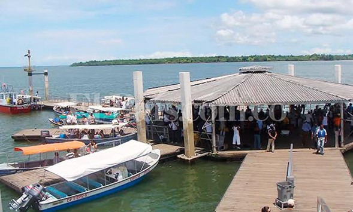
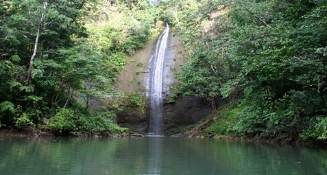
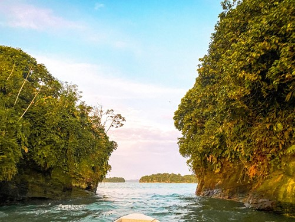
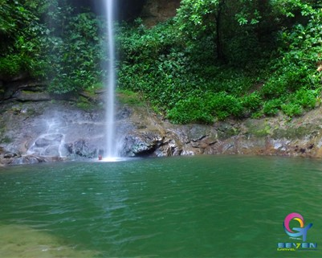
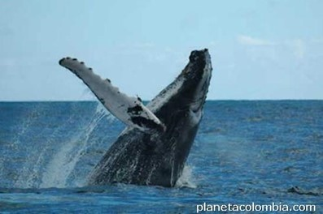
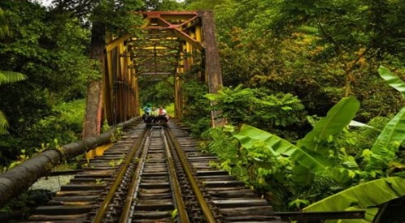
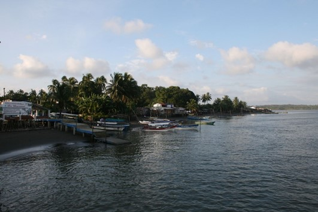
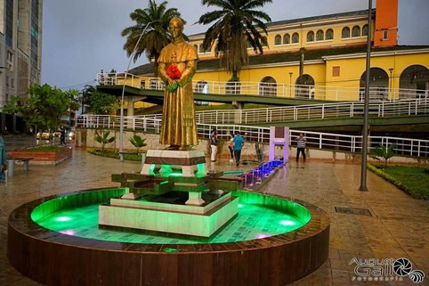
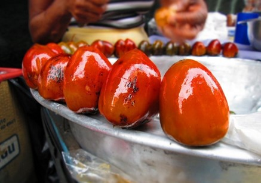
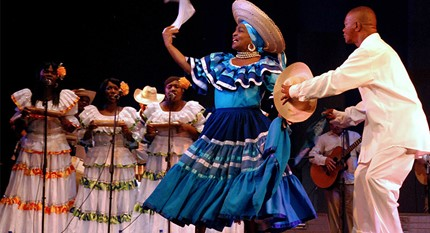

Actividades Tradicionales
EL TURISMO UNA VENTANA A LA BELLEZA DE LA NATURALEZA
El eje de la ciudad es el Muelle Turístico, desde donde es posible iniciar algunas de las actividades más importantes. Pero, además, es una construcción que bien vale la pena conocer; pues cuenta con una curiosa y única estructura flotante de 240 metros de largo por cinco de ancho; con seis muelles.
A una hora en lancha desde el muelle se llega a Bahía Málaga. Y, no solo el destino es imperdible, sino la belleza de los parajes que se divisan en esta travesía.
Visitaremos el Parque Nacional Natural Uramba Bahía Málaga. Este paraíso escondido se encuentra en la costa del Pacífico colombiano en medio de la selva tropical. Conoceremos en profundidad toda la cultura y los paisajes naturales que esta playa tiene para ofrecer. Cascadas, charcos, pozas de agua dulce, playas y acantilados. Degustarás frutas, dulces y la mejor comida del Pacífico, elaborada por ancestros que mantienen viva la tradición.
- Parque Nacional Natural Uramba Bahía Málaga
El Parque Nacional Natural Uramba Bahía Málaga es una de las zonas con mayor biodiversidad del planeta, y desde 2010, es una área marina protegida, que permite la conservación de especies en un territorio de 47 mil hectáreas. Este sitio alberga una gran diversidad de especies de fauna y flora continental y marina. Es considerado como uno de los “Hot Spots”, o epicentros de la conservación de la naturaleza a nivel mundial.
El atractivo más importante del parque es la llegada -cada año entre julio y octubre- de más de quinientas ballenas yubarta para la cría de sus ballenatos. La temperatura del agua en esta época del año, cercana a los 28 grados centígrados, es la razón de la migración de más de ocho mil kilómetros, desde la Antártida y la Patagonia chilena. Su avistamiento puede realizarse desde las ocho de la mañana a las cuatro de la tarde, embarcándose en lanchas contratadas a operadores autorizados (estos horarios dependen de la marea).
Una vez allí, no deje de visitar también la Cascada La Sierpe -de 65 metros de altura- que es solo una de las tres caídas de agua en la zona; pero es la preferida por los fotógrafos por su tamaño y belleza.
Juanchaco y Ladrilleros se han consolidado como destinos obligatorios para quienes van a Bahía Málaga. Las playas de Ladrilleros son las mejores de la región, por su extensión y las gigantescas olas que la bañan. Cuenta, además, con el “mirador de las ballenas”, donde puede observarse su llegada, y adicionalmente ver las hermosas puestas de sol. Al frente de Juanchaco se encuentra Isla Palma, de relevancia ecológica, al ser un santuario para el avistamiento de aves, especialmente entre los meses de octubre y febrero.
(Imagen tomada de planetacolombia)
- Reserva Forestal Protectora de los ríos Escalerete y San Cipriano
Un paraje imperdible para quienes emprender turismo de aventura es la Reserva Forestal Protectora de los ríos Escalerete y San Cipriano. Para llegar, existe un medio de transporte singular: las conocidas “brujitas”, que son unos vehículos artesanales que avanzan sobre las viejas líneas del tren. Después de poco más de cuarenta y cinco minutos, es posible disfrutar de los diversos pozos y cascadas de agua dulce. Allí, te recomendamos recorrer los ríos con la ayuda de un neumático, mientras se realiza la observación de la riqueza de fauna y flora que alberga.
- LA BOCANA
La Bocana atrae las ballenas jorobadas en época de apareamiento por sus aguas cálidas. Bazan Bocana playas tranquilas y servicio de hospedaje y alimentación. Una de las atracciones del lugar es el sendero ecológico interpretativo con corrientes de agua y rutas de otros elementos de variada simpatía. Con servicio de hospedaje y una gastronomía típica de la región.
La Bocana es un lugar desconocido para muchos pero que deberían conocer, es un lugar especial para parejas donde la intimidad y podría ser el lugar preciso para escribir una novela, para pintar, para olvidar una desgracia reciente o tener un perfecto día sin el estrés de la ciudad.
(Imagen tomada de upload.wikimedia)
- ATEDRAL DE BUENAVENTURA
- DELICIAS DEL PACIFICO
Los saberes y tradiciones culinarias son factores fundamentales en la vida e identidad de las comunidades afrocolombianas. En el caso de los habitantes de Buenaventura hay un interés manifiesto, en las mismas comunidades, por conocer, recuperar y conservar sus tradiciones culinarias como parte de sus sistemas locales de seguridad y soberanía alimentaria. La reflexión colectiva sobre la cocina tradicional lleva necesariamente al conocimiento de la relación existente entre los sistemas agrícolas tradicionales, la oferta ambiental y la cultura.), de productos del bosque, la caza y la pesca artesanal
- LA DANZA
Cultura de Buenaventura: Primero que todo la cultura es el conjunto de todas las formas y expresiones de una sociedad determinada. Como tal incluye costumbres, prácticas, códigos, sexo, normas y reglas de la manera de ser, vestimenta, religión, rituales, normas de comportamiento y sistemas de creencias. Desde otro punto de vista se puede decir que la cultura es toda la información y habilidades que posee el ser humano. La danza es un conjunto de movimientos del cuerpo que marcan pasos, mudanzas y actitudes al son, acompasados, de la música. La Danza Negra del Pacifico colombiano expresa gozo y alegría como en el "Abozao"; pesar y tristeza como en "El Bunde" y la "Paloma"; estímulo sexual como en "El Currulao"; sátira como en "La Jota", ira como en "La Batea" o "La Mina"; actividades del laboreo como en "El Pilón"; conquista amorosa como en "La Buluca".
(Imagen tomada de cdn.colombia)